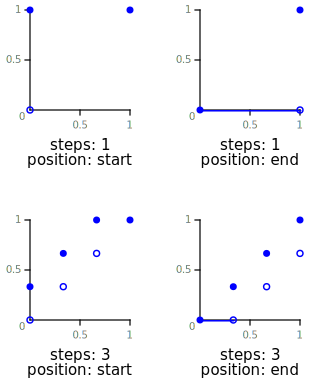

# CSS3 animation属性中的steps功能符深入介绍
by zhangxinxu from http://www.zhangxinxu.com/wordpress/?p=7618
本文可全文转载，但需要保留原作者和出处，摘要引流则随意。
# 一、不只是连续的变化才叫动画
@keyframes wpSpin {0% {transform: rotate(0);}100% {transform: rotate(360deg);}}.ani-rot1{animation: wpSpin 1s linear infinite; }.ani-rot2{animation: wpSpin 1s steps(4) infinite; }.ani-rot3{animation: wpSpin 1s steps(8, end) infinite; } 我很早的时候有个错误认知，认为只有连续的变化才叫动画；含笑半步癫那样的效果不是动画。
后来才明白，只要有轨迹可循，即使肉眼看上去是断断续续的，实际上也是动画。
举个例子，现有素材图如下：

请问下面两个图形变化，哪个属于动画效果？
答案是：两个都是。
我们如果换一种素材，大家就能知道非连续图形变化也是动画了。
效果分别为连续旋转和断续旋转。
后面一张图就是非连续变化下的效果，反而是我们实际项目中正确的菊花loading效果。
而实现的关键就是本文要深入介绍的 steps()功能符。
# 二、一句话介绍steps()功能符
steps()功能符可以让动画不连续。
# 三、steps()在CSS3 animation中地位
steps()功能符和CSS3 animation中的 cubic-bezier()功能符的地位和作用是一样的，都可以作为 animation-timing-function的属性值。
只不过 steps()更像是楼梯坡道，cubic-bezier()更像是无障碍坡道。如下图示意：
然后 steps()简化出了 step-start和 step-end这两个关键字；cubic-bezier()则有 linear，ease，ease-in，ease-out以及 ease-in-out。
cubic-bezier指三次贝塞尔曲线，具体可参见我之前文章“深度掌握SVG路径path的贝塞尔曲线指令”。
steps()指逐步运动，下面进一步深入介绍。
# 四、搞清楚steps()中的 start和 end
steps()有一定的学习难度，总是搞不清楚，最主要就是 start和 end傻傻分不清楚。我这里自我挑战下，看看能不能说清楚。
常见 steps()用法举例：
steps(5, end);
steps(2, start); 用 steps()语法表示就是：
steps(number, position) 其中：
number 数值。这个很好理解，表示把我们的动画分成了多少段。
假设有如下CSS3动画 keyframes，定义了一段从 0~100px的位移：
@keyframes move {
0% { left: 0; }
100% { left: 100px; }
} 假设我们的 number值是5，则相当于把这段移动距离分成了5段，如下示意图：
position
关键字。表示动画是从时间段的开头连续还是末尾连续。支持 start和 end两个关键字，含义分别如下：
start：表示直接开始。end：表示戛然而止。是默认值。
# 为什么position非常难理解？
我认为两个原因：
steps()属于timing function，也就是时间函数，时间这个东西是虚的，看不见，摸不着，联想乏力，所以认知成本高。这也是为什么那么多人都不珍惜时间的原因——无法感知。CSS规范中对于
start和end的定义是基于数学函数来的，函数这东西，多少人的噩梦，因为过于抽象，与现实难以关联，所以，如果我们盯着定义去理解start和end，那就是死胡同，不归路，就算现在弄懂了，过段时间再遇到，得了，全忘光光了，函数图哪个是哪个，鬼才记得。下面这张图就出自规范文档：按照规范图再细化解释就是：
start：表示直接开始。也就是时间才开始，就已经执行了一个距离段。于是，动画执行的5个分段点是下面这5个，起始点被忽略，因为时间一开始直接就到了第二个点：end：表示戛然而止。也就是时间一结束，当前距离位移就停止。于是，动画执行的5个分段点是下面这5个，结束点被忽略，因为等要执行结束点的时候已经没时间了：
# 基于现实感知重新理解position！
万物具有相对性。例如，苍蝇眼中的人类动作都是慢动作，但是人类眼中的苍蝇却非常敏捷。
同样的，start和 end这里的开始和结束是相对于时间而言的，但是，如果站在人类可感知的具体事物而言，start和 end却是相反的含义。
所以，我们可以这么理解：
start：表示结束。分段结束的时候，时间才开始走。于是，动画执行的5个分段点是后5个点：end：表示开始。分段开始的时候，时间跟着一起走。于是，动画执行的5个分段点是前5个点：
# 记住position参数的含义
牢记这么一句话：一切都是反的！start不是开始，而是结束；end不是结束，而是开始。
# 五、step-start和step-end
step-start和 step-end是 steps()功能符简化关键字，注意，是 step-*，step，后面没有 s。
其中，step-start等同于 steps(1, start)，step-end等同于 steps(1, end)或者 steps(1)。
step-start和 step-end用中文短句解读就是：一步到位和延迟到位，在实际项目中有什么作用呢？
对于只有 0%,100%或 from, to两个关键时间帧的动画，step-start和 step-end是没有任何需要使用的理由的。
如果是非等分，无法过渡的阶梯动画，则有使用价值，例如下面这个基于 box-shadow实现的打点动画效果：
.dotting { display: inline-block; min-width: 2px; min-height: 2px; margin-right: 8px; box-shadow: 2px 0 currentColor, 6px 0 currentColor, 10px 0 currentColor; animation: dot 4s infinite step-start both;}@keyframes dot { 25% { box-shadow: none; } 50% { box-shadow: 2px 0 currentColor; } 75% { box-shadow: 2px 0 currentColor, 6px 0 currentColor;} } 订单提交中
实现核心代码如下（此打点方法最多排纯CSS打点动画第3位，更多见此文介绍和指引）：
<button>订单提交中<span class="dotting"></span></button> .dotting {
display: inline-block; min-width: 2px; min-height: 2px;
margin-right: 8px;
box-shadow: 2px 0, 6px 0, 10px 0;
animation: dot 4s infinite step-start both;
}
@keyframes dot {
25% { box-shadow: none; } /* 0个点 */
50% { box-shadow: 2px 0; } /* 1个点 */
75% { box-shadow: 2px 0, 6px 0; } /* 2个点 */
} # 六、steps()与填充模式animation-fill-mode
animation-fill-mode有时候也会影响 steps()的断点表现，例如下面这个语句：
animation: move 5s forwards steps(5, end); 动画只执行一次，因为没有设置 infinite无限循环，而 forwards虽然表示“前”，但同样和现实表现是反的，也就是动画结束时候元素保持动画关键帧最后的状态。于是，下面6个分段点都会执行，整个动画停止在第6个分段点上。
这显然不是我们想要的，怎么处理呢？
可以消减分段个数和动画运动的跨度，调整如下：
@keyframes move {
0% { left: 0; }
100% { left: 80px; }
} 也就是原来终点 100px改成 80px，同时CSS调用改成：
animation: move 5s forwards steps(4, end); 也就是原来 steps(5, end)改成 steps(4, end)，最后 100%这一帧交给 forwards即可！
# 七、结束语
steps()是一个用得比较多的功能符，除了本文展示的loading效果，在逐帧动画中用得非常多。
例如，一些不太复杂的闪屏效果，写小而美的动画效果等（有名的如：点赞礼花效果）。
深入理解 steps()的好处在于，当我们在实现这些动画效果时候，省去了很多查阅文档套用语法的时间，还省掉了很多一个一个 number值调试的时间。可以让你干活效率加倍，有更多时间学习其他东西，形成正向循环，久而久之，必当学有所成。
就这些，感谢您花宝贵时间一直阅读到这里！
欢迎交流！
«上一篇 微信网页悬浮窗交互效果的web实现
是时候好好安利下LuLu UI框架了！ 下一篇»
（本篇完） 是不是学到了很多？可以分享到微信！ 有话要说？点击这里。
文章来源：https://www.zhangxinxu.com/wordpress/2018/06/css3-animation-steps-step-start-end/